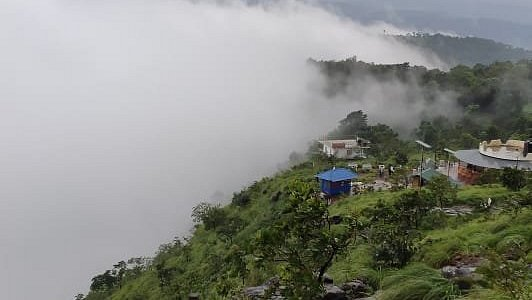
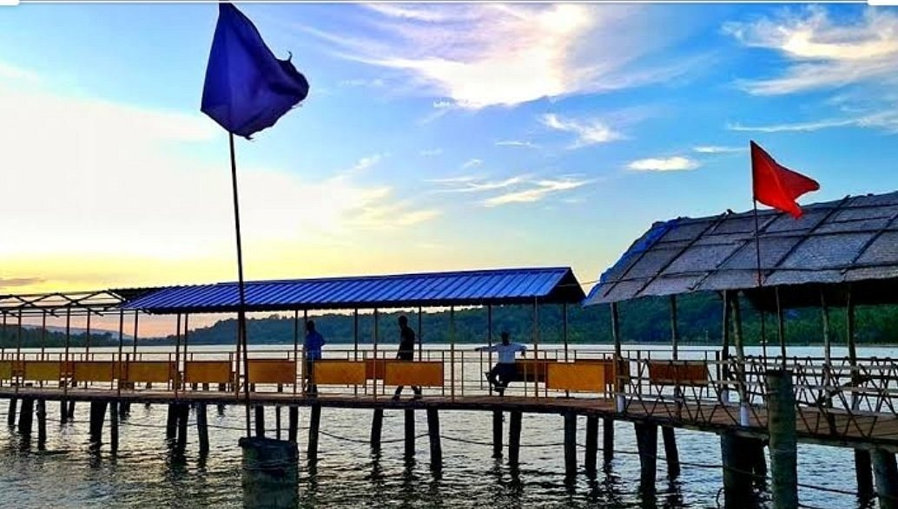

Kannur, where the Arabian Sea whispers its secrets to the shore, unfolds like a tapestry woven with culture, history, and timeless lore. Its emerald hills cradle the morning mist, setting a tranquil stage for the ancient Theyyam, where tradition dances in a spiritual embrace. Golden sands stretch to meet the rhythmic waves, with Muzhappilangad Beach inviting the thrill of a drive along its shore. Forts stand as sentinels of the past, guarding tales of battles, trade, and monsoon rains. In Kannur, modernity mingles seamlessly with the evergreen beauty of its landscapes, creating a land of legends vibrant and pure, where the heart finds solace and inspiration.
Top 3 places to visit in Kannur
Palakkayam Thattu

Palakkayam Thattu, perched at an altitude of 3,500 feet in Kannur's Western Ghats, is a serene hill station that enchants visitors with its lush greenery and panoramic views. Known for its misty hills and abundant flora and fauna, this destination offers thrilling activities like ziplining, rope crossing, and outdoor camping. The trek to its summit is moderately challenging, rewarding adventurers with breathtaking scenery and a tranquil escape into nature's embrace. A visit to Palakkayam Thattu is a journey into the heart of Kerala's untouched beauty
Location: Karuvanchal, Kannur 670571 Kerala India
Entry fee: INR 20 per person
Timings: 5:00 AM to 10:00 PM
Muzhappilangad Drive-in Beach
Muzhappilangad Drive-in Beach, nestled along the Malabar Coast in Kannur, Kerala, is a unique gem celebrated as Asia's longest drive-in beach. Stretching over 4 kilometers, its firm sands invite visitors to experience the thrill of driving along the shoreline, whether by car or motorbike. Bordered by natural black rocks that shield it from strong ocean currents, the beach offers calm waters ideal for swimming and birdwatching, with migratory birds flocking to its shores during winter. Adventure enthusiasts can indulge in parasailing, water sports, and even explore the nearby Dharmadam Island during low tide. Muzhappilangad Beach is a harmonious blend of serene beauty and exhilarating activities, making it a must-visit destination for travelers.
Location: Muzhappilangad, Kannur 670663 India
Entry fee: 40rs
Timings: 10:00 AM – 5:00 PM
V-Pra Kaayal Floating Park

V-Pra Kaayal Floating Park / V-Pra Park is a water park which is beautifully constructed on top of Vayalapra Kaayal. V-Pra Park is one of the beautiful places in Kannur district to spend with your family and children. You drive through roads touching the river powered by solar lights on 2 sides and finally you will start walking on the path built on top of the river. It is packed with various activities like pedal boating, kayaking, group boating, party boat, kids water ride, gaming, food court with different types of foods.
Location:Vayalapra Parappu Chemballikundu Rd Payangadi, Kannur 670304 India